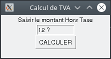
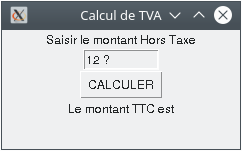

Les bases pour créer une interface graphique avec Python et Tkinter

Sur cette page, vous allez apprendre à créer une interface graphique afin d'améliorer l'ergonomie des programmes. Comme nous l'avons déjà vu dans d'autres activités, python dispose de nombreuses bibliothèques : pour les interfaces graphiques Tkinter est très pratique.
En fait, à la base TK est un environnement graphique pour le langage TCL-TK sous linux. Le langage TCL-TK remonte à 1988, tandis que TK remonte à 1990.
La bibliothèque Tkinter (pour TK inter, ou encore lien avec TK) permet d'exploiter cet environnement graphique dans Python.
Découvrir les éléments de base pour créer une interface
Exemple de fenêtre simple
#Appel de la bibliothèque
from tkinter import *
#-------------création de l'interface graphique---------------
#Création de la fenêtre et de son titre
window=Tk()
window.geometry("300x150")
window.title("Calcul de TVA")
#Mise en place d'un widget de label
htLabel = Label(window, text="Saisir le montant Hors Taxe")
htLabel.pack()
#Mise en place d'un widget de saisie
ht = StringVar()
ht.set("12 ?")
saisieHT = Entry(window, textvariable=ht, width=10)
saisieHT.pack()
#Mise en place d'un widget de bouton
bouton1 = Button(window, text="CALCULER", width=8)
bouton1.pack()
#-------------gestion des événements----------------------------
#Lancement de la boucle des événements de la fenêtre
window.mainloop()
Une fois le script lancé, vous devriez avoir : 
Commentaires complémentaires :
window: variable de type objet, permettant de manipuler les éléments de la fenêtre,window.title: la méthodetitlepermet de définir le titre de la fenêtre,window.geometry: la méthodegeometrypermet de définir les dimensions de la fenêtre,nomWidget.pack(): la méthodepack()permet de raccrocher le widget à la fenêtre.Un widget est un objet graphique (bouton, texte, saisie, case à cocher...). Il sont positionnés dans la fenêtre de haut en bas dans l'ordre du script.
ht = StringVar(): déclaration de la variablehtcomme étant un objet de typeStringpour la saisie dans la fenêtreTkinter- attention c'est une fonction spécifique àTkinter.A noter que nous verrons plus loin comment convertir cette
stringenfloat.
window.mainloop() : lancement de la fenêtre et de la boucle des événements des différents widgets qui permettent d'interagir avec l'utilisateur.
Découvrir les éléments de base pour gérer les événements
La fenêtre est complétée avec : - Les textes à afficher dans la fenêtre et les largeurs modifiés, - Un deuxième champ de saisie : le taux de TVA.
Grâce à la boucle window.mainloop(), la fenêtre est en attente d'événements. Il s'agit maintenant de gérer ces évenements.
Exemple de fenêtre avecgestion des évènements
#**************programme avec gestion événement*****************
#Appel de la bibliothèque
from tkinter import *
#---------définition de la fonction de calcul de TVA------------
def calculTVA():
global ht, ttc
#conversion en float du montant HT
pht=float(ht.get())
#calcul de la TVA avec un taux de 20%
ttc=round(pht*(1+(20/100)),2)
#actualisation du libellé de la fenêtre affichant le ttc
ttcLabel.configure(text="Le montant TTC est "+str(ttc))
#-------------création de l'interface graphique-----------------
#Création de la fenêtre et de son titre
window=Tk()
window.geometry("300x150")
window.title("Calcul de TVA")
#Mise en place d'un widget de label
htLabel = Label(window, text="Saisir le montant Hors Taxe")
htLabel.pack()
#Mise en place d'un widget de saisie
ht = StringVar()
ht.set("12 ?")
saisieHT = Entry(window, textvariable=ht, width=10)
saisieHT.pack()
#Mise en place d'un widget de bouton
bouton1 = Button(window, text="CALCULER", width=8, command=calculTVA)
bouton1.pack()
#Mise en place d'un widget de label pour afficher le TTC
ttcLabel = Label(window, text="Le montant TTC est")
ttcLabel.pack()
#-------------gestion des événements----------------------------
#Lancement de la boucle des événements de la fenêtre
window.mainloop()
Une fois le script lancé, vous devriez avoir :

3 éléments ont été ajoutés :
-
L'événement sur le bouton pour lancer le calcul :
Dans le premier programme, la déclaration du bouton était :🐍 Script PythonDans ce programme c'est :bouton1 = Button(window, text="CALCULER", width=8)🐍 Script Pythonbouton1 = Button(window, text="CALCULER", width=8, command=calculTVA)Cela permet d'indiquer à la boucle
window.mainloop()que un événement sur le bouton bouton1 fera appelle à la fonctionclaculTVA. -
La fonction qui calcule la TVA :
A noter que
global ht, ttcpermet d'indiquer que ces variables sont globales : elles sont communes à l'ensemble des fonctions et du programme principale. Cela permet de simplifier l'échange de données entre l'interface graphique et les fonctions.A noter aussi la manière d'actualiser le label
ttclabel. -
Le label pour afficher le résultat :
Il est déclaré dans la partie création de l'interface graphique et ne pose pas de difficulté particulière.
Ressources complémentaires
Documentation python de la bibliothèque Tkinter